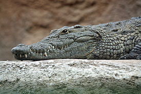
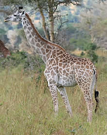
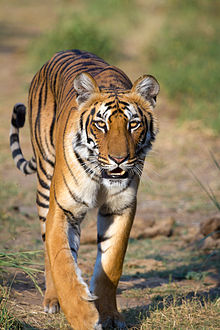

|

Crocodiles (subfamily Crocodylinae) or true crocodiles are large aquatic reptiles that live throughout the tropics in Africa, Asia, the Americas and Australia. Crocodylinae, all of whose members are considered true crocodiles, is classified as a biological subfamily. A broader sense of the term crocodile, Crocodylidae that includes Tomistoma, is not used in this article. The term crocodile here applies only to the species within the subfamily of Crocodylinae. The term is sometimes used even more loosely to include all extant members of the order Crocodilia, which includes Tomistoma, the alligators and caimans (family Alligatoridae), the gharials (family Gavialidae), and all other living and fossil Crocodylomorpha. |

Elephants are large mammals of the family Elephantidae and the order Proboscidea. Two species are traditionally recognised, the African elephant (Loxodonta africana) and the Asian elephant (Elephas maximus), although some evidence suggests that African bush elephants and African forest elephants are separate species (L. africana and L. cyclotis respectively). Elephants are scattered throughout sub-Saharan Africa, South Asia, and Southeast Asia. Elephantidae is the only surviving family of the order Proboscidea; other, now extinct, members of the order include deinotheres, gomphotheres, mammoths, and mastodons. Male African elephants are the largest extant terrestrial animals and can reach a height of 4 m (13 ft) and weigh 7,000 kg (15,000 lb). |
|

The giraffe (Giraffa camelopardalis) is an African even-toed ungulate mammal, the tallest living terrestrial animal and the largest ruminant. Its species name refers to its camel-like shape and its leopard-like colouring. Its chief distinguishing characteristics are its extremely long neck and legs, its horn-like ossicones, and its distinctive coat patterns. It is classified under the family Giraffidae, along with its closest extant relative, the okapi. The nine subspecies are distinguished by their coat patterns. |

The tiger (Panthera tigris) is the largest cat species, reaching a total body length of up to 3.38 m (11.1 ft) over curves and exceptionally weighing up to 388.7 kg (857 lb) in the wild. Its most recognisable feature is a pattern of dark vertical stripes on reddish-orange fur with a lighter underside. The species is classified in the genus Panthera with the lion, leopard, jaguar and snow leopard. Tigers are apex predators, primarily preying on ungulates such as deer and bovids. They are territorial and generally solitary but social animals, often requiring large contiguous areas of habitat that support their prey requirements. This, coupled with the fact that they are indigenous to some of the more densely populated places on Earth, has caused significant conflicts with humans. |